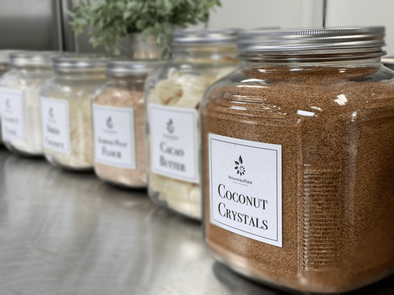

Coconut Crystals
On every post you read about sweeteners please keep this thought in mind… Just because the dessert recipes on my site (or any other raw site) are raw, created on the foundation of whole foods, and are healthier than the typical SAD (Standard American Diet) desserts… they are still desserts and should be consumed with the same sensibilities.

I am not here to debate which sweetener is better than the other or whether or not you should consume them. You know your own health better than anyone else so you will need to make those determinations for yourself.
To Use or Not to Use…
Sweeteners, in general, tend to face controversy at some point or another. My suggestion is to use sweeteners in their raw and purest form so be sure to read the labels and if you are really concerned, called the manufacturers.
Some raw sweeteners are vegan and some are not, you decide on what the priority is for you. All we can ask of ourselves is to make the best possible decisions with the information we are given and what is available to us.
Why do you use several sweeteners in one recipe?
I like to mix different sweeteners together for several reasons. By layering multiple sweeteners, I can sometimes reduce the overall glycemic load and create layers of flavor and sweetness. Plus, different sweeteners respond texturally in unique ways. For instance, dates not only add sweetness to a recipe but also works as a binder, holding cakes, cookies, and bars together. To keep the sugar levels down, I might add stevia, which bumps up the sweet level without adding more sugars or calories. In raw recipes, you always need to take your health needs into account, the texture that you want from a recipe, and the overall flavor.
Nutritional Data:
These crystals contain 17 amino acid, mineral, vitamin C, B vitamins and has a nearly neutral pH. It is made from a natural sap that is raw and enzymatically alive!
Does it taste like coconut?
It has a mild, sweet taste that doesn’t resemble coconut at all, even though it is derived from coconut sap. It is claimed to be a low glycemic sweetener, but again, please test your own body’s response. Flavor-wise it is the closest raw, dried sweetener to brown sugar.
What type of recipes do you use it in?
As you may have gathered, coconut sugar is a granulated type of sugar, meaning dry. This is wonderful because most raw sweeteners are in liquid form, and sometimes a recipe just would work the best with a dry type of sugar. Coconut crystals look just like the name indicates—brown little crystals. As is, they can be wonderful to sprinkle on top of cookies to give them that sugared crunch, or you can grind them down to a finer powder.
I like to use it in raw cookie, bar, and bread recipes. It is also a good sweetener to toss with wet, freshly soaked nuts and seeds, that are popped into the dehydrator. Due to the type of sugar that it is, once it cools, it firms up. If you were to try this same technique with syrupy-type sweeteners, you would end up with a sticky mess.
© AmieSue.com